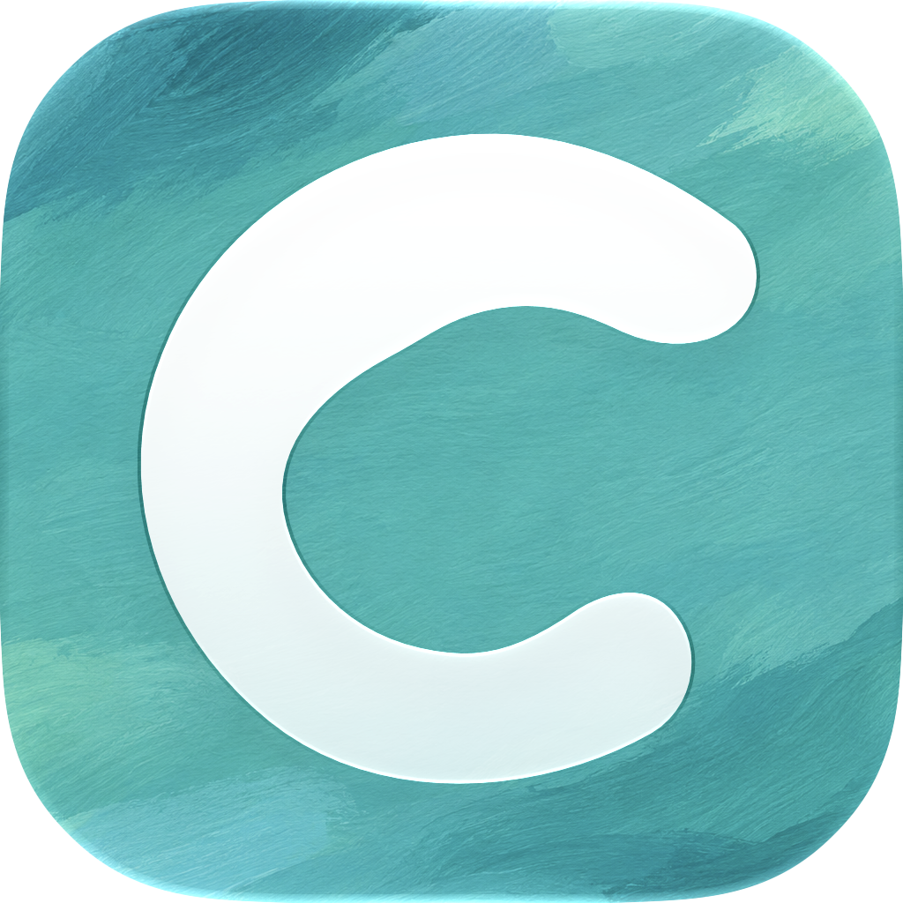

1. Lagoon
A solid teal base.Native Icon Composer exports. The same glass mark, with three backgrounds.

The editable .icon documents are saved beside these previews. Native glass, dark, and monochrome rendering remain available in Icon Composer.